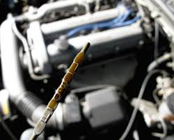
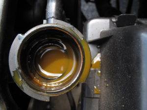

Checking Oil
Checking oil is a very important point of buying a car, you can tell a good amount just from pulling out the dip stick and checking color, smell, and irregularities

Oil Level
Oil level is a huge and important step into checking when you will need to exchange, as well as the health of an engine. If oil has been exchanged the after the reccomended milage every time, then most other car issues will also tend to cease. Synthetic oil is also a great reccomendation for cars. More clear steps on how to check oil are written here.

Oil Irregularities/Colors
Irregular colors are a sign of oil that is mixing with other fluids, or that it has been tampered with. A good sign is if it is any other color than the normal shade of color displayed in the first picture. It can also be darker, which shows age of oil, but any other odd or very bright or milky colors is a bad sign. Such cars should be avoided at all costs. Milky colored oil is a good sign that the coolant and oil is mixing, which will be very expensive to fix. Learn more here
You can also check out this video for how to check oil!